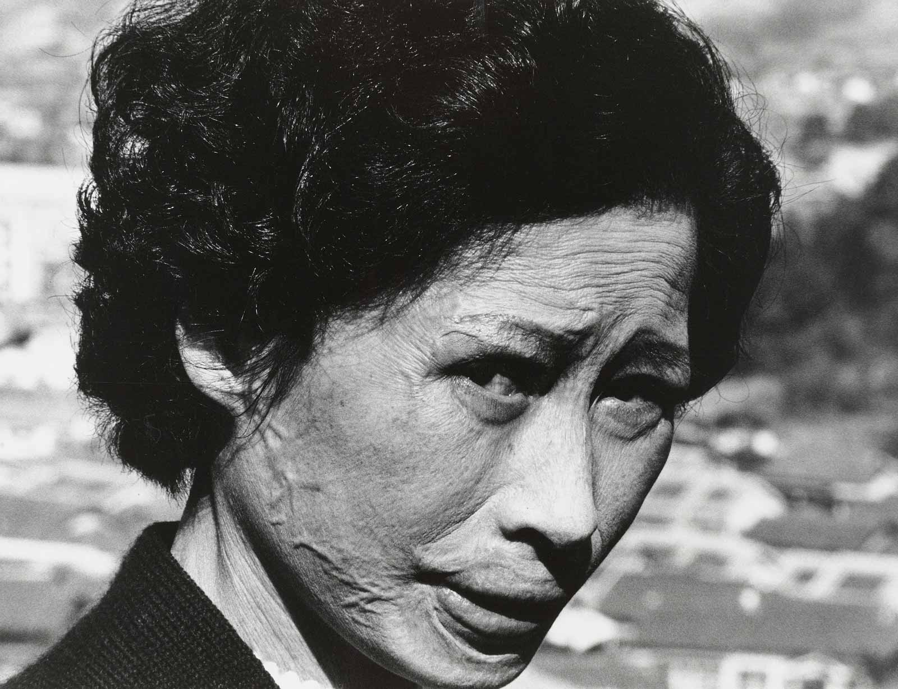

Home
Landing at Nagasaki Airport last November, I joined a line of Japanese men, women, and children waiting to disembark from our plane. Most were likely returning home on this holiday weekend or arriving to visit family and friends. I wondered how many of them remembered or thought about the nuclear annihilation of this city 73 years ago -- within, that is, their own lifetimes or those of their parents or grandparents.
From the airport, I took a bus along the jagged coast through small mountain villages toward Nagasaki, entering the city from the north on a route used by rescue and relief workers on August 9, 1945, and by bewildered family members racing into the smoldering city to search for their loved ones. For months after the bombing, no public transportation could penetrate the ruins of this northern part of the city. My bus, on the other hand, moved seamlessly into a metropolis that showed no sign of its obliteration three-quarters of a century ago.
Much of Nagasaki and the world have, of course, moved on from that terrible morning when a five-ton plutonium bomb plunged at 614 miles per hour toward the city of 240,000 people. Forty-three seconds later, it detonated a third of a mile above Nagasaki’s Urakami Valley. A super-brilliant blue-white flash lit the sky, followed by a thunderous explosion equal to the power of 21,000 tons of TNT. The entire city convulsed. Within hours it was engulfed in flames.
Based on my book, Nagasaki: Life After Nuclear War, I often give talks in America about that unforgettable (or now often-too-forgettable) day when, for only the second time in history, human beings deemed it right to assault their own species with apocalyptic power. At these book talks, I’ve learned to be prepared for someone in the audience to say that the Japanese deserved what they got. It’s still hard to hear. At its “burst point,” the Nagasaki blast reached temperatures higher than at the center of the sun and the velocity of its shock wave exceeded the speed of sound. Within three seconds, the ground below had reached an estimated 5,400 to 7,200 degrees Fahrenheit. Directly beneath the bomb, infrared heat rays instantly carbonized human and animal flesh and vaporized internal organs. Did the men, women, and children of Nagasaki really deserve that?
As the mushroom cloud rapidly ascended two miles over the city and eclipsed the sun, the bomb’s vertical blast pressure crushed much of the Urakami Valley. Horizontal blast winds tore through the region at two and a half times the speed of a Category 5 hurricane, pulverizing buildings, trees, animals, and thousands of people. The blazing heat twisted iron, disintegrated vegetation, ignited clothing, and melted human skin. Fires broke out across the city, burning thousands of civilians alive. And though no one knew it yet, larger doses of radiation than any human had ever received penetrated deeply into the bodies of people and animals.
Defining Terror, 1945-Style
“What about Pearl Harbor?” American supporters of the bomb write me, referring to the Japanese attack that began the Pacific War. “What about Japan’s atrocities in China?” a man screamed at me at a reading. “And,” veterans ask, “what about the Allied POWs who were tortured and killed by Japanese soldiers?”
Yes, I say to them. Yes, I understand your outrage, even so many decades later. I can fathom the courage of those who fought, the profound loss so many American families experienced during that long and costly war, and how desperately everyone wanted it to end.
But other truths exist as well. Japan did attack the United States and committed countless other military aggressions and horrific war crimes -- and the United States bombed and incinerated all or parts of 66 Japanese cities, killing, maiming, or irradiating more than 668,000 civilians. In Nagasaki alone, by the end of 1945 when a first count was possible, 74,000 men, women, and children were dead. Of those, only 150 were military personnel. Seventy-five thousand more civilians were injured or irradiated. Today, this kind of indiscriminate killing and harm to civilians would be called “terrorism.”
Despite the history most Americans have learned -- that the atomic bombings of Hiroshima and Nagasaki were military necessities that ended World War II and saved a million American lives by obviating the need for an invasion of Japan’s home islands -- there is no historical evidence that the Nagasaki bombing had any impact on Japan's decision to surrender. What we aren’t taught are the political and military complexities of the last few months of the war or how, in the post-war years, our government crafted this end-of-war narrative to silence public opposition to the atomic bombings and build support for America’s fast-expanding nuclear weapons program. What many don’t realize is that this misleading version of history allows us to turn away from what happened in Hiroshima and Nagasaki and continue to support the development and proliferation of nuclear weapons without ever having to think about what those weapons do.
Buy the Book
Still, so many decades later, in a world in which the Trump administration is preparing to withdraw from a key Cold War nuclear agreement with Russia and the U.S. nuclear arsenal is being modernized to the tune of up to $1.6 trillion, it’s worth recalling the other side of the story, the kind of suffering the Hiroshima and Nagasaki bombings caused in August 1945 and long after. Within weeks, people in both cities began experiencing mysterious symptoms: vomiting, fever, dizziness, bleeding gums, and hair loss from what doctors would later understand as radiation-related sickness. Purple spots appeared all over their bodies. Many died in excruciating pain within a week of the first appearance of such symptoms. Fear gripped Nagasaki. From one day to the next, no one knew when his or her time might come.
In those first nine months, pregnant women suffered spontaneous abortions, stillbirths, or the deaths of their newborn infants. Many of the babies who survived would later develop physical and mental disabilities.
Five years after the bombings, thousands more began dying from leukemia and other illnesses caused by high-dose radiation exposure, initiating cycles of higher than normal cancer rates that would last for decades. The bombs had, from the survivors’ perspective, burned their bodies from the inside out. Parents exposed to radiation feared possible genetic defects in their children and hovered over them year after year, terrified that what looked like a simple cold or stomach ache would lead to severe illness or death.
Even today, radiation scientists are still studying second and third generation hibakusha (atomic-bomb-affected people) for genetic effects passed down from their parents and grandparents, reminding us how much we still don’t understand about the insidious nature of radiation exposure to the human body.
Hibakusha Stories
It’s essential for us to remember such grim details, not just for the sake of history, but for our future, because nuclear weapons far more powerful and devastating than the Nagasaki bomb are now commonplace.
In a small area of Nagasaki that includes Hypocenter Park, the Nagasaki Atomic Bomb Museum, and Peace Park, dedicated teams of Japanese men and women still work tirelessly to counter the world’s inclination to forget what happened. For the past 35 years, one organization, the Nagasaki Foundation for the Promotion of Peace, has assembled cadres of hibakusha speakers -- typically about 40 at any time -- willing to tell their stories. They are now aging women and men with unique memories of the day of that bombing and the weeks, months, and years that followed.
Sixteen-year-old Taniguchi Sumiteru was delivering mail on his bicycle about a mile from the hypocenter when, a split-second after the bomb detonated, its tremendous force and searing heat blew him off his bicycle and slammed him face-down onto the road. His entire back was burned off. By all rights, he should never have survived. Three months later, he finally received medical treatment. Still in constant pain ten years after the bombing, he became one of Nagasaki’s earliest anti-nuclear activists.
Wada Koichi, an 18-year-old streetcar driver at the time of the bombing, decided to speak out when he held his first grandchild and flashed back to the charred corpse of a baby he’d stepped over as he searched for his missing colleagues. Do-oh Mineko, then 15, suffered critical injuries to her head and lingered near death for months. Though those injuries eventually healed, radiation exposure had caused all her hair to fall out. For nearly a decade, she hid in her house until her hair finally grew back. As an adult, she kept her identity as a hibakusha secret until, in her late sixties, she found new meaning for her life by telling her story to schoolchildren. Yoshida Katsuji, only 13, was looking up in the direction of the bomb at the moment it exploded. His entire face was scorched. Years later, as friends and colleagues told their stories publicly, he remained silent, afraid of looks of disgust from audiences due to his disfigurement. He finally began speaking out in his late sixties after deciding that being shy was not a good reason to keep silent when it came to the terrorizing impact of nuclear weapons.
These four and many others dared to cross boundaries in Japanese culture to tell their personal stories of suffering and help others grasp what nuclear war would mean for the world. Unfortunately, most hibakusha -- at least those who were old enough to have vivid memories of the bombing and its aftermath -- have died or are reaching the end of their lives. They are the only people capable of telling us firsthand about the experience of nuclear war, and each year their numbers diminish.
A David-and-Goliath Nuclear World
With that in mind, I returned to Nagasaki in November to participate in the city’s 6th Global Citizens Assembly for the Elimination of Nuclear Weapons. Specifically, I was invited to present on a panel tasked with exploring ways to carry forward the hibakusha stories. What made the conference unique was the participation of both hibakusha and other citizens of Nagasaki, including high school and university students, scholars, activists, artists, musicians, writers, and interpreters. All of them were intent on exploring new ways to communicate stories of survival, from August 1945 to now, experiences that should remind us why the vision of a world without nuclear weapons matters.
Both panelists and participants again confronted the intensity of nuclear war. As hibakusha Kado Takashi, 83, prepared to stand before the assembly and tell his story for the very first time, he turned to me and pounded his heart with his hands to show me how terrified he was. Then, summoning his courage, he began to speak.
Yamanishi Sawa, 17 years old, tenderly told her grandmother’s story of survival and her own tale of teenage activism both at her school and in meetings with anti-nuclear activists in Geneva, Switzerland. Everyday citizens adopted the stories of hibakusha no longer with us, using the survivors’ own words to recall the hell -- and humanity -- of nuclearized Nagasaki. All of this, and more, reminded us of what those survivors have long known but the rest of the world seldom stops to grasp: that there’s nothing abstract about nuclear war and that nuclear weapons can never be instruments of peace.
They know what the world’s top nuclear physicists (and the Bulletin of Atomic Scientists with its doomsday clock) have been telling us for decades: whether by intentional use, human error, technological failure, or an act of terrorism, our world remains at high risk of a nuclear conflagration that could leave Hiroshima and Nagasaki in the shade. Rather than a great power war, even a regional nuclear conflict between, say, India and Pakistan could create a planetary “nuclear winter” that might, in the end, kill up to a billion people.
Keep in mind, as these Nagasaki activists do, that today there are nearly 15,000 weapons in the nuclear arsenals of nine countries. Of these, almost 4,000 are actively deployed across the globe. Theoretically, they are meant to deter another country from launching a nuclear attack, but the success of such deterrence policies relies, in part, on both technological invulnerability and relatively rational decision-makers. Need more be said in the age of Trump, Kim Jong-un, and others? Most important, for nuclear deterrence to work, a nation must be committed to -- and believed by other nations to be committed to -- the mass murder, injury, and irradiation of huge civilian populations. We rarely consider what this really means.
It was difficult to tell an audience like the one in Nagasaki that many Americans still wholeheartedly support both the atomic bombings of Japan and their country’s continuing development of its nuclear arsenal. To mitigate this discouraging truth, I cited something Wada Kōichi told me years ago.
Now 91, Wada was inside Nagasaki’s streetcar terminal when the bomb brought the building crashing down on top of him and his coworkers. If you can call anything about surviving nuclear war lucky, he was one of the lucky ones. He suffered only minor injuries and mild radiation sickness, and all of his family members survived. The rest of them evacuated Nagasaki after the bombing, but he stayed to work, day after day, on rescue and recovery teams. He watched his best friend die, lighting the match to the boy’s makeshift funeral pyre. In November 1945, when seven streetcars resumed operation on a few routes in the city, he drove the fourth one, thrilled to be a part of Nagasaki’s recovery.
Sixty years after the bombing, Wada would awaken every morning at 5:00 a.m., open his bedroom window, and look out onto the Urakami Valley, marveling at how the city had been rebuilt from those atomic ruins. “One person can’t do anything,” he told me, “but if many people gather together, they can accomplish unimaginable things. If it’s possible to rebuild this city out of nothing, why isn’t it possible for us to eliminate war and nuclear weapons, to create peace? We can’t not do it!”
Before I left Nagasaki, I visited the hypocenter memorial and looked up into the blue sky at the spot where, I imagined, the atomic bomb had exploded, changing human history forever. I spent 12 years writing Nagasaki: Life After Nuclear War, and the stories of that city and its hibakusha remain part of every breath I take. The hibakusha of Nagasaki and Hiroshima and the other anti-nuclear activists across the globe -- including members of the International Campaign to Abolish Nuclear Weapons, which won the 2018 Nobel Peace Prize for their work in passing the Treaty for the Prohibition of Nuclear Weapons -- are the Davids of our world. They face the Goliaths -- those nuclear-weapons states that cling to arsenals capable of destroying humanity.
In the face of such resolute, immensely powerful Goliaths, the Davids are the next generation of energetic, passionate, creative thinkers who single-mindedly refuse to let us forget or rationalize Nagasaki and Hiroshima, and who believe in a world of mutually supported international safety without nuclear weapons. On behalf of Wada Koichi, all hibakusha past and present, and the entire human race, my bet is on them.
Susan Southard’s first book, Nagasaki: Life After Nuclear War, received the 2016 J. Anthony Lukas Book Prize in Nonfiction and the Dayton Literary Peace Prize. It was also named a best book of the year by the Washington Post, the Economist, and the American Library Association. Southard’s work has appeared in the New York Times, the Los Angeles Times, Politico, TomDispatch, and Lapham’s Quarterly.
Follow TomDispatch on Twitter and join us on Facebook. Check out the newest Dispatch Books, John Feffer’s new dystopian novel (the second in the Splinterlands series) Frostlands, Beverly Gologorsky's novel Every Body Has a Story, and Tom Engelhardt's A Nation Unmade by War, as well as Alfred McCoy's In the Shadows of the American Century: The Rise and Decline of U.S. Global Power and John Dower's The Violent American Century: War and Terror Since World War II.
Copyright 2019 Susan Southard
Thanks to TomDispatch.com